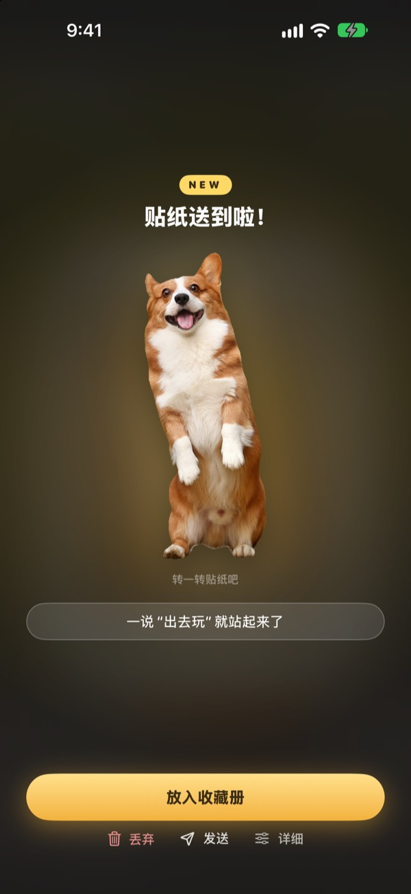
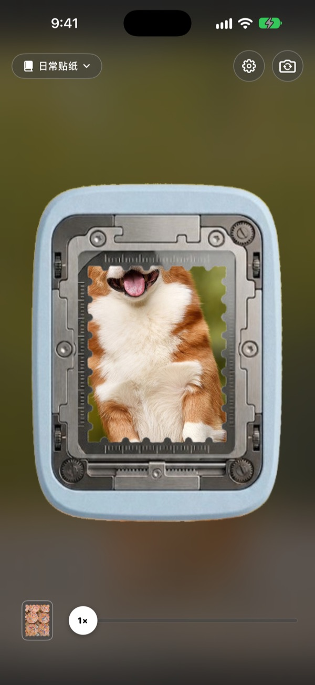
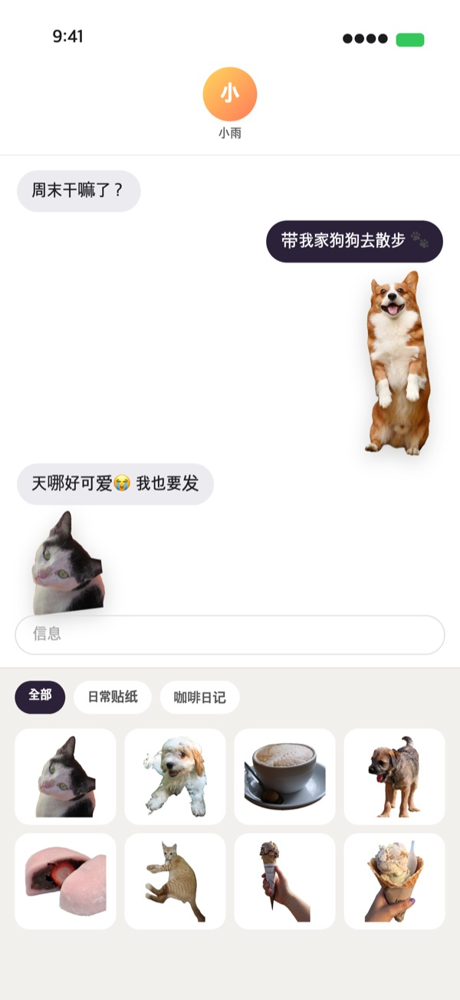
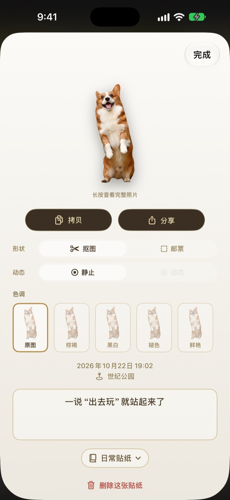
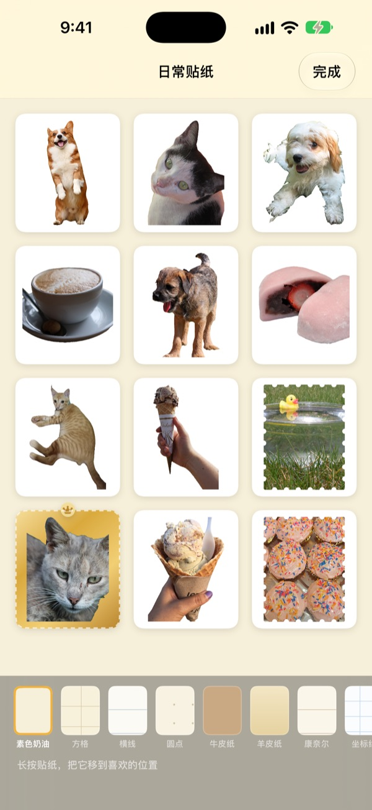

长按一下，
这一刻就成了贴纸
把画面对准打孔窗，长按后松手。小狗会按小狗的轮廓被抠出来，按下前后那一小段动作也一并留下。撕下的贴纸可以直接在信息和键盘里发出去。
所有功能免费。贴纸和照片只保存在你的设备上。

亲手撕一张试试
选一个画面，长按打孔按钮再松开。撕下来以后，也可以换换形状和色调。
可爱的瞬间，总是睡在相册里
好不容易拍到狗狗吐舌头的样子，想做成贴纸发给朋友，还得翻相册、抠图、再打开别的贴纸 App。等弄好了，聊天早就换了话题。Punching 在拍下的那一刻就撕出贴纸，放进收藏册的同时，它已经躺在信息的贴纸栏里了。
主体抠出来，风景撕成邮票
画面里有人、宠物或物品这类可以抠出的主体，就只抠出它的样子；像风景这样没有主体的画面，就撕成带锯齿边的邮票形状。
按下前后的一小段动作会一起记录下来，所以贴纸是会动的。

在信息和键盘里直接用
撕下的贴纸会出现在“信息”的贴纸栏里。打开 Punching 键盘后，在其他 App 里也能挑选、粘贴。
会动的贴纸发出去依然会动。长按贴纸拷贝，就能粘贴到任何地方。

撕下以后，形状和色调随时改
抠图和邮票、动态和静止，随时切换。原始照片一直保留，改多少次都和第一次一样清晰。
还可以在原图、棕褐、黑白、褪色、鲜艳、青蓝中选择色调，并留下一句话、日期和地点。

收进收藏册，再打印成纸贴纸
按主题建立收藏册，在信息和键盘里也能按收藏册挑选。牛皮纸、方格、横线、羊皮纸等底纸任你选，顺序也能自由安排。
还能把收藏册做成带邮票形状裁切线的可打印 PDF，直接打印到贴纸纸上。

三步就能开始
- 1
对准打孔窗
把想留下的东西放进相机中间的窗口。
- 2
长按后松手
松手的一瞬间，贴纸就撕下来了。
- 3
收好，发出去
放进收藏册后，信息和键盘里马上就能用。
在哪里用，在哪里改
- 信息
- 输入框旁的 ＋ ▸ 贴纸 ▸ Punching 贴纸
- 其他 App
- 开启 Punching 键盘，用地球按钮切换后挑选粘贴
- 任何地方
- 长按贴纸拷贝，再粘贴
- 纸贴纸
- 收藏册的 ⋯ ▸ 使用 ▸ 可打印贴纸页（PDF）
- 底纸和顺序
- 收藏册的 ⋯ ▸ 自由装饰
- 以前的照片
- 在收藏册里点“从照片导入”
- 默认撕取形状
- 设置 ▸ 撕取 ▸ 默认形状
- 显示动态
- 设置 ▸ 显示 ▸ 自动播放动态
- 快速打开
- 快捷指令或控制中心里的“打开 Punching 相机”
设置在相机画面右上角的齿轮按钮里。
常见问题
贴纸不会动。
请在相机右上角的设置 ▸ 显示中确认“自动播放动态”已打开，再点开贴纸，看看形状下面的“动态”是否打开。动态总是会一起记录，所以随时都能打开。从“照片”App 导入的照片只有一张，所以不会动。
出来的不是抠图，而是邮票形状。
像风景这样没有可抠主体的画面，会自动撕成邮票形状。点开贴纸，随时可以在“形状”里更改。如果想一开始就撕成邮票形状，请在设置 ▸ 撕取 ▸ 默认形状中修改。
在“信息”里看不到贴纸。
请在“信息”输入框旁点按 ＋ ▸ 贴纸，找到 Punching 贴纸。在 Punching 里撕下至少一张贴纸后它才会出现；如果有两个以上的收藏册，可以按收藏册浏览。详细步骤在设置 ▸ 使用 ▸ 在信息和键盘中使用里。
怎么打开键盘？
在设置 ▸ 使用 ▸ 在信息和键盘中使用里点按“打开设置”，然后在键盘 ▸ 打开 Punching 贴纸。粘贴贴纸需要“允许完全访问”，但键盘不会读取或发送你输入的文字，也不会联网。之后在任意 App 中点按键盘上的地球按钮，切换到 Punching 贴纸即可。
想打印成真正的贴纸。
点按收藏册右上角的 ⋯ ▸ 使用 ▸ 可打印贴纸页（PDF）。系统会以收藏册为单位生成带邮票形状裁切线的 300dpi 打印用 PDF，可以直接用家里的打印机打在贴纸纸上，也可以拿去打印店。详细步骤见同一菜单里的打印指南。
以前建的合集去哪了？
从 1.0.1 起，贴纸统一用收藏册来整理。每个合集都变成了同名的收藏册，里面的贴纸、底纸和顺序也原样搬了过去。
状态栏亮起了绿点。
这是 iOS 的相机使用指示灯。只在相机画面打开时亮起；打开收藏册时相机会暂停，绿点也就熄灭了。
删除贴纸会怎样？
贴纸、原始照片和动态数据会从设备上永久删除，也会从“信息”的贴纸栏里消失。删除后无法恢复，请谨慎操作。
照片和贴纸保存在哪里？
全部只保存在你的设备上。没有账户，没有我们自己的服务器，也没有广告。离开设备的只有匿名使用统计、错误报告，以及你主动发送的反馈。详情请见隐私政策。
真的免费吗？
是的，所有功能都免费。喜欢的话可以在 App 里给开发者打赏，但打赏不会解锁任何功能。
有疑问或建议，请发邮件至 leeo@kakao.com，我们通常会在 2 到 3 天内回复。也可以在 GitHub（M1zz/StampCamera）提交问题报告和功能建议。